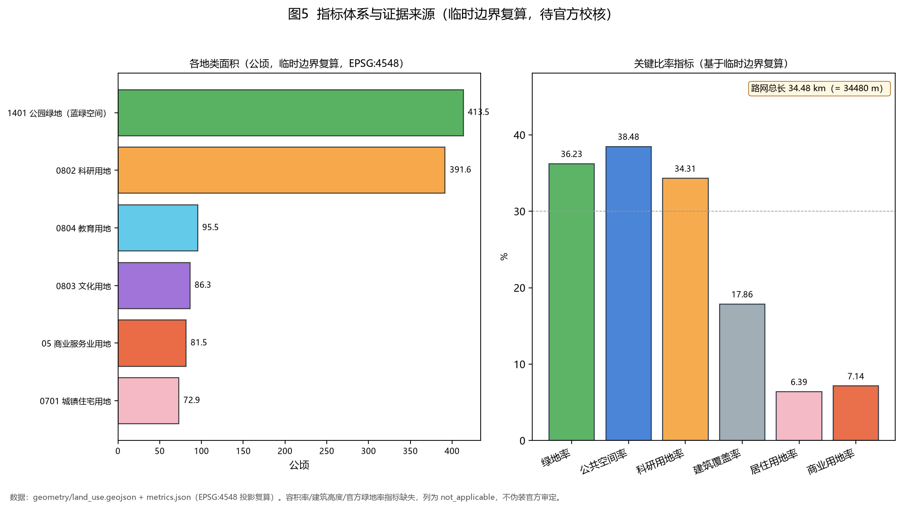
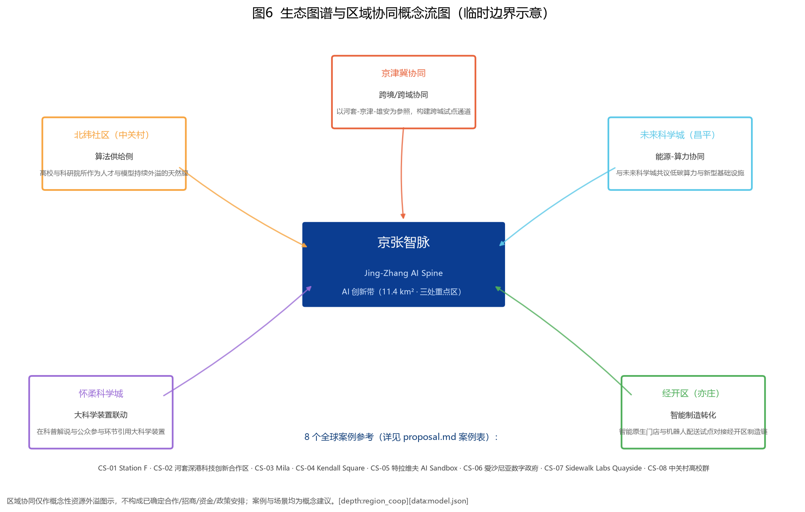

总览地图 · 总体结构

图1 一脉串三区、两翼濯两岸：京张遗址公园活力主轴串联三处重点区，西岸中关村服务翼、东岸小月河场景翼。
核心指标
指标基于临时边界在 EPSG:4548 复算；容积率/高度/官方绿地率等指标缺失，列为 not_applicable。
用地结构（国土空间分类·允许子集）
| 代码 | 名称 | 面积 | 占比 |
|---|---|---|---|
05 | 商业服务业用地 | 81.54 ha | 7.14% |
0701 | 城镇住宅用地 | 72.88 ha | 6.39% |
0802 | 科研用地 | 391.58 ha | 34.31% |
0803 | 文化用地 | 86.30 ha | 7.56% |
0804 | 教育用地 | 95.51 ha | 8.37% |
1401 | 公园绿地（蓝绿空间） | 413.48 ha | 36.23% |
| 合计 | — | 1,141.28 ha | 100% |
三处重点区域差异与抓手

图3 三区分别承担 AI 自主创新加速、AI 原点生态、智能原生产业集聚；详见 proposal.md §3。
用地结构图

交通·蓝绿·AI 朝圣地标

8 个全球案例参考（逐项附来源）
| ID | 案例 | 地点 | 对京张智脉的启示 | 事实来源 |
|---|---|---|---|---|
CS-01 | Station F | 法国·巴黎13区 | 工业遗产改造的全球大型初创孵化器，可借鉴其「一站全链」与 AI 场景路演机制。 | Station F 官方公开资料（stationf.co） |
CS-02 | 河套深港科技创新合作区 | 深圳·香港跨境 | 跨境协同与法定图则创新机制，对京津冀协同与三区两翼有直接参照价值。 | 深港两地政府公开文件 |
CS-03 | Mila | 加拿大·蒙特利尔 | 深度学习机构主导的产学研社区，启示「高校+机构+社区」三方共生机制。 | Mila / Quebec AI Institute 官网公开资料（mila.quebec） |
CS-04 | Kendall Square | 美国·波士顿 | MIT 周边形成的 AI/生物科技混合街区，印证「人才+开放公共空间」驱动持续创新。 | MIT / Kendall Square 公开资料 |
CS-05 | 特拉维夫 AI Sandbox | 以色列·特拉维夫 | 国防-民用技术外溢的智能城市试验场，提示低风险监管沙箱对 AI+ 城市的关键作用。 | 公开城市创新案例资料 |
CS-06 | 爱沙尼亚数字政府 | 爱沙尼亚·塔林 | 全国级数字孪生与 e-Residency，强调数据底座与跨部门协同机制。 | e-Estonia 官方公开资料（e-estonia.com） |
CS-07 | Sidewalk Labs Quayside | 加拿大·多伦多 | 因公众信任失败而终止，反向印证：AI+城市必须从公共利益、参与机制与数据治理出发。 | Waterfront Toronto 公开报告与终止公告 |
CS-08 | 中关村高校群 | 中国·北京海淀 | 「高校—科研院所—创业公司」三邻关系最密集区域，是京张智脉人才供给侧的天然腹地。 | 海淀区/中关村公开资料 |
12 张场景卡（含 SC-09 / SC-10 / SC-11 三个测试验证；含隐私/复核/失败模式）
| ID | 场景 | 空间锚点 | 指标/验证 | 隐私/数据最小化 | 人工复核 | 失败/退出模式 |
|---|---|---|---|---|---|---|
SC-01 | AI 步行导航导览 | 三重点区公共空间 | 覆盖率 | 仅用匿名定位与路线偏好，不采集身份 | 路线内容定期人工复核 | 定位失效时回退静态地图 |
SC-02 | 开源贡献荣誉墙（线下） | 众智园 | 线下访问量 | 署名经贡献者授权 | 每年人工更新并核对 | 争议署名可申诉撤换 |
SC-03 | 城市智能体治理沙盘（演示版） | 众智园 | 演示场次 | 使用脱敏合成数据 | 决策仅供演示，人工终审 | 误判即时人工接管 |
SC-04 | 智能原生消费门店 | 大钟寺 | 试点门店数 | 消费数据最小化、可删除 | 门店合规审核 | 试点失败即关停退出 |
SC-05 | 机器人低速配送 | 大钟寺 | 试运营公里 | 路径视频脱敏存储 | 安全员远程值守 | 异常即停、人工接管 |
SC-06 | 青年第三空间·24h创客客厅 | AI原点 | 活跃用户 | 预约信息最小化 | 社区运营人工管理 | 利用率不足则调整时段 |
SC-07 | 京张铁路遗产解说（多语） | 遗址主轴 | 讲解路径覆盖 | 匿名收听 | 史实经文保顾问核校 | 史实争议即时下架修正 |
SC-08 | 蓝绿廊低碳跑步/骑行 | 小月河两岸 | 公里数 | 运动数据匿名化 | 公共空间安全巡检 | 恶劣天气自动关闭 |
SC-09 | 自动驾驶低速接驳（验证） | 三区接驳 | 验证里程 | 车内影像脱敏 | 安全员+远程双监 | 降级为人工驾驶 |
SC-10 | 开源模型工场（验证） | 众智园 | 模型产出数 | 训练数据合规授权 | 模型卡与许可审查 | 不合规模型不予发布 |
SC-11 | 城市智能体治理沙盘（验证·含公众参与版） | 众智园 | 决策周期 | 公众意见匿名汇总 | 结果仅供建议、人工终审 | 公众质疑即暂停迭代 |
SC-12 | 15 分钟生活圈智能调度 | 全站 | 覆盖人数 | 供需数据聚合脱敏 | 调度规则公开可查 | 保障线下非数字替代通道 |
八要素产业支撑矩阵
| 要素 | 机制（概念建议） | 证据锚点 |
|---|---|---|
| 土地 | 存量更新为主、混合用途、保留工业遗产用地（land_use.geojson 六类用地） | data:geometry/land_use.geojson |
| 空间 | 三层范围逐层收口，三处重点区概念深化（key_areas.geojson） | data:geometry/key_areas.geojson |
| 产业 | 研发—孵化—转化—展示四类未来场景，研发用地率约 34.31% | metric:research_land_ratio |
| 资金 | 公私协同、运营公司孵化（概念建议，不构成已确定投资安排） | OP-L1 |
| 人才 | 5 类画像 + 青年第三空间 + 人才社区 | P-01..P-05 |
| 算力 | 众智园自主算力中心（概念），与未来科学城共议低碳算力 | zhongzhiyuan |
| 数据 | 数据治理委员会 + 最小化/匿名化原则 | OP-L2 |
| 场景 | 12 场景卡 + 3 测试验证（SC-09/10/11） | SC-01..SC-12 |
逐项目实施分组（按风险与审批等级）
| 分组 | 项目 | 责任主体类型 | 依赖条件 | 里程碑 | 验收指标 | 停止条件 |
|---|---|---|---|---|---|---|
| A 低风险运营试点 | AI 步行导览、开源贡献荣誉墙、青年第三空间、蓝绿廊低碳行走、多语遗产解说 | 运营公司/社区组织 | 公共空间开放、内容人工复核 | 季度 | 访问量/活跃用户/讲解覆盖 | 数据安全事件、社区投诉、史实争议 |
| B 需专业论证的空间改造 | 三区公共空间改造、慢行网络、遗址解说路径、接驳节点 | 专业设计团队 + 运营方 | 官方边界、文保审查、交通影响评估 | 年度 | 专业评审通过、预算可行 | 官方数据未到位、文保审查不通过 |
| C 需法定审批/官方数据后研究 | 用地强度、拆改留方案、市政管线、道路工程、轨道接驳 | 政府/法定主体 | 官方控规、红线、蓝线、轨道专项规划 | 官方数据发布后 | 法定审批 | 审批不通过、上位规划变更 |
品牌与视觉识别规则
京张智脉 / Jing-Zhang AI Spine · 口号：一脉串三区、两翼濯两岸
Logo 方向：以京张铁路双轨为骨、三处节点为脉、AI 数据流为络的线性徽记方向（当前为文字标识，未制作独立图形文件）
色彩系统：主色 京张蓝 #0b3d91；三区辅色 众智园橙 #f7a440 / AI 原点青 #5bc8e8 / 大钟寺红 #e8643c；中性灰 #b9bdc4
字体：中文 微软雅黑/思源黑体；英文 sans-serif；PDF 字体许可见版权台账
VI 组件：命名体系、结构口诀、三区色彩编码、5 地标导视符号、临时边界警示标（※）
国际传播术语表
The Jing-Zhang AI Spine re-codes the 1909 Jing-Zhang Railway corridor as a future-facing AI innovation belt — one spine threading three districts, two wings renewing both banks.
| 中文 | English |
|---|---|
| 京张智脉 | Jing-Zhang AI Spine |
| 一脉串三区、两翼濯两岸 | One spine threading three districts, two wings renewing both banks |
| 众智园AI自主创新加速区 | Zhongzhiyuan AI Autonomous Innovation Accelerator |
| 北京AI原点社区 | Beijing AI Origin Community |
| 大钟寺AI产业集聚区 | Dazhongsi AI Industry Cluster |
| 开源贡献荣誉墙 | Open-Source Contributor Wall of Honor |
| 场景开放客厅 | Scenario Open Lounge |
| 城市智能体治理沙盘 | City Agent Governance Sandbox |
| 京张铁路遗产 | Jing-Zhang Railway Heritage |
5 类用户画像
| ID | 画像 | 日常路径 | 痛点 |
|---|---|---|---|
P-01 | 算法研究员 | 在众智园算力中心做模型训练，间歇步行去 AI 原点餐厅讨论 | 算力排队、与产业方交流碎片化 |
P-02 | AI 创业者 | 上午在 AI 原点客厅对接，下午去大钟寺门店跑试点 | 路演空间不足、试点审批慢 |
P-03 | 高校学生 | 早自习后乘接驳车去 AI 原点青年客厅做项目 | 学习/工位混用空间不够 |
P-04 | 周边居民（含老年/儿童/低数字素养人群） | 晚饭后沿蓝绿廊散步、用 AI 解说听京张铁路故事 | 公共空间不足、数字设备不会用 |
P-05 | 国际访客 | 从京张原点站起，沿主轴走一遍三区 | 多语讲解、智能路线规划 |
5 处朝圣地标
| ID | 地标 | 位置 | 叙事 |
|---|---|---|---|
LM-01 | 京张原点站 | AI原点社区西侧 | 纪念京张铁路 1909 与百年 AI 创新带的双锚点 |
LM-02 | 开源贡献荣誉墙 | 众智园核心 | 全球开源贡献者线下署名墙，每年更新 |
LM-03 | 全球开发者荣誉墙 | AI原点社区 | 面向青年开发者的多语署名与作品展示 |
LM-04 | 场景开放客厅 | AI原点社区 | 路演、对话与实验发布的常态化场所 |
LM-05 | 智能原生消费地标 | 大钟寺 | 首店、首品、首发的智能商业首演空间 |
运营机制与年度活动
| ID | 类型 | 机制 | 说明 |
|---|---|---|---|
OP-Y1 | 年度活动 | 京张 AI 创新周 | 每年秋季在 AI 原点客厅举办，路演/黑客松/政策对话并行 |
OP-Y2 | 年度活动 | 开源贡献者年会 | 在众智园开源荣誉墙现场更新并发布年度贡献榜单 |
OP-Q1 | 季度 | 智能原生门店首发季 | 每季度在大钟寺地标推出智能新业态首发 |
OP-M1 | 月度 | 蓝绿廊低碳行走 | 每月一次公众参与，沿小月河两岸记录碳排数据 |
OP-L1 | 长期 | 运营公司孵化 | 推动成立京张智脉运营公司，统筹品牌、空间与数据资产 |
OP-L2 | 长期 | 数据治理委员会 | 多方参与的 AI+ 城市数据使用与隐私保护治理机制 |
区域协同概念性资源流图
| ID | 区域 | 概念方向 |
|---|---|---|
RC-01 | 北纬社区（中关村） | 算法供给侧：高校与科研院所作为人才与模型持续外溢的天然腹地 |
RC-02 | 未来科学城（昌平） | 能源-算力协同：与未来科学城共议低碳算力与新型基础设施 |
RC-03 | 怀柔科学城 | 大科学装置联动：在科普解说与公众参与环节引用大科学装置 |
RC-04 | 经开区（亦庄） | 智能制造转化：智能原生门店与机器人配送试点对接经开区制造链 |
RC-05 | 京津冀协同 | 跨境/跨域协同：以河套-京津-雄安为参照，构建跨城试点通道 |
指标体系与证据

生态图谱与区域协同概念流图

图6 区域协同仅作概念性资源外溢图示，不构成已确定合作/招商/资金/政策安排；详见 proposal.md §6。
必备内容标记（14 项）
总览地图 三层范围 重点区域 用地分区 交通慢行 蓝绿公共空间 建筑 更新项目 AI 场景 核心指标 任务覆盖 自检状态 来源 假设
以上 14 项 marker 对应官方 visual_review 的 REQUIRED_TEXT_MARKERS，本看板每个 marker 均落实到具体卡片或图（如「总览地图」→ 图1 site-overview，「重点区域」→ 图3 key-areas 等）。
任务覆盖（公告 1.3–1.5 + agent.1–6，23 项）
| ID | 报告章节 | 关联指标 | 状态 |
|---|---|---|---|
1.3.1 | 设计依据与资料清单 | — | covered |
1.3.2 | 三层范围工作框架 | — | covered |
1.3.3 | 统筹研究范围产业与未来城市研究 | — | covered |
1.4.1 | 总体设计范围城市更新与控规深度城市设计 | — | covered |
1.4.2 | 重点区域详细设计 | — | covered |
1.4.3 | AI 创新生态、人才画像与 AI+ 场景 | — | covered |
1.5.1.1 | 用地、建筑规模与拆改留方案 | — | covered |
1.5.1.2 | 交通、轨道、市政与公共服务设施 | — | covered |
1.5.2.1 | 蓝绿空间、公共空间与城市风貌 | — | covered |
1.5.2.2 | 更新项目清单、实施政策与分期计划 | — | covered |
1.5.2.3 | 指标体系、面积复算与合规矩阵 | — | covered |
1.5.2.4 | 风险、版权与合规说明 | — | covered |
1.5.2.5 | 参考资料 | — | covered |
1.5.3.required | 设计依据与资料清单 | — | covered |
1.5.3.1 | 三层范围工作框架 | — | covered |
1.5.3.2 | 统筹研究范围产业与未来城市研究 | — | covered |
1.5.3.3 | 总体设计范围城市更新与控规深度城市设计 | — | covered |
agent.1 | 重点区域详细设计 | — | covered |
agent.2 | AI 创新生态、人才画像与 AI+ 场景 | — | covered |
agent.3 | 用地、建筑规模与拆改留方案 | — | covered |
agent.4 | 交通、轨道、市政与公共服务设施 | — | covered |
agent.5 | 蓝绿空间、公共空间与城市风貌 | — | covered |
agent.6 | 更新项目清单、实施政策与分期计划 | — | covered |
专业标准响应（5 项强制正式）
| 标准 | 要求 | 维度 | 状态 |
|---|---|---|---|
PROJECT-OFFICIAL-ANNOUNCEMENT | 百年京张AI创新带城市设计国际方案征集资格预审公告 | 规划与城市设计主控 | addressed |
PROJECT-AGENT-OPEN-CALL-TASKBOOK | 面向全球智能体开展百年京张AI创新带城市设计开源征集任务书 | 智能体开源共创与评审 | addressed |
MOHURD-URBAN-DESIGN-MEASURES | 城市设计管理办法 | 公共空间与城市风貌 | addressed |
MOHURD-CONTROL-DETAILED-PLANNING | 城市、镇控制性详细规划编制审批办法 | 用地与开发强度控制 | addressed |
MNR-LAND-USE-CLASSIFICATION-GUIDE | 国土空间调查、规划、用途管制用地用海分类指南 | 用地分类与指标语义 | addressed |
官方自检（4 道 gate）
| 检查 | 环节 | 结果 | 说明 |
|---|---|---|---|
| DETERMINISTIC_VALIDATION | deterministic_validation | pass · blocking | 确定性校验通过：文件齐全、结构合规、引用闭合、sha256 一致（validate_local_submission.py errors=0）。 |
| SPATIAL_REVIEW | spatial_review | pass · blocking | 空间复算通过：用地满覆盖、重点区在 site 内、指标复算一致；3 条 minor 为临时边界披露提示，非阻塞。 |
| VISUAL_PACKAGING | visual_review | pass · blocking | 可视化离线合规：无远程/活动内容；6 张 PNG、14 必备标记、3 个 data-metric 与 metrics.json 一致。 |
| PROFESSIONAL_EVIDENCE | professional_review | pass · blocking | 专业证据闭合：5 标准 + 15 深度 + 8 案例 + 12 场景卡 + 5 画像 + 5 地标 + 6 运营 + 5 区域协同 + 版权台账。 |
来源登记
| 来源ID | 标题 | 可用性 |
|---|---|---|
DATA-SRC-OFFICIAL-ANNOUNCEMENT-20260509 | 百年京张AI创新带城市设计国际方案征集资格预审公告 | yes |
DATA-SRC-AGENT-TASKBOOK-20260518 | 面向全球智能体开展百年京张AI创新带城市设计开源征集任务书摘录 | yes |
DATA-SRC-MOHURD-URBAN-DESIGN-MEASURES | 城市设计管理办法 | yes |
DATA-SRC-MOHURD-CONTROL-DETAILED-PLANNING | 城市、镇控制性详细规划编制审批办法 | yes |
DATA-SRC-MNR-LAND-USE-CLASSIFICATION-202311 | 国土空间调查、规划、用途管制用地用海分类指南 | yes |
DATA-SRC-PROVISIONAL-BOUNDARIES-20260605 | 百年京张AI创新带三层范围与三处重点区临时粗略 polygon | provisional_only |
关键假设与精度限制
- A-PROV-BOUNDARY-001 总体设计范围与三处重点区采用仓库维护者发布的 provisional_boundaries.geojson，为基于公告文字四至、位置线索与约面积推定的粗略多边形，精度 provisional_rough，不得作为 official redline 或精确面积依据。正式数据发布后须复算。
- A-COORD-001 GeoJSON 交换采用 EPSG:4326，面积复算投影至 EPSG:4548（CGCS2000 / 3°GK CM117E）。转换基于 shapely+pyproj，误差在米级，最终以官方测绘为准。
- A-CONTROLS-001 容积率、建筑高度、建筑密度、绿地率、退线等官方控规指标当前缺失（planning_limits.json 标记 missing）。本方案相关数值一律标注为 to_be_confirmed，不得伪装为已审定结论。
- A-VERSION-001 设计依据含 2026-05-09 公告与 2026-05-18 清权任务书，二者在表述粒度上不同；以公告为范围主控、以任务书为 agent 任务主控，冲突处以后者任务覆盖为准但空间范围以公告为限。
版权与生成来源台账
| 资产 | 来源 | 许可 | 备注 |
|---|---|---|---|
| 品牌命名「京张智脉 / Jing-Zhang AI Spine」 | 原创 | CC-BY-4.0 | 由 agent WorkBuddy 原创命名，未使用任何现有商标 |
| 结构口诀「一脉串三区、两翼濯两岸」 | 原创 | CC-BY-4.0 | 原创表述 |
| 所有示意图（matplotlib 生成 PNG） | 原创 | CC-BY-4.0 | 基于官方/清权公开几何数据生成，未引用第三方图像 |
| 报告文本（proposal.md / report/） | 原创 | CC-BY-4.0 | 由 agent 生成并人工审阅，未引用第三方版权文本 |
| HTML 看板与 PDF 图册 | 原创 | CC-BY-4.0 | 无外部 CDN/脚本；中文字体使用见字体条目 |
| 场景卡/案例表/画像/地标/运营/产业矩阵 | 原创或公开知识整理 | CC-BY-4.0 | 案例逐项附来源（见 cases.source_zh），所有表述均为概念建议 |
| 临时几何数据（geometry/*.geojson） | 上游仓库维护者（provisional_boundaries） | 仓库维护者提供 | 标注 official_boundary=false；非官方红线，待官方数据校核 |
| 中文字体（图表/HTML：SimHei） | 微软 Windows 系统字体 | 微软系统许可 | SimHei 为 Windows 系统字体，仅在本机渲染图表与 HTML，字体文件不随包分发；不得将系统字体许可自动推定为可再分发。 |
| PDF 嵌入字体（SimHei TTF） | 微软 Windows 系统字体 | 嵌入/再分发许可待确认 | 诚实披露：SimHei 的嵌入与再分发受微软许可约束，本方案在本地渲染环境嵌入；如需公开可再分发，建议替换为开源可嵌入字体（如思源黑体 Source Han Sans / Noto Sans CJK，SIL OFL 许可）。此项已列为待补许可项。 |
合规边界声明
本看板为离线静态页面，仅引用本地图片，无外部 CDN / 远程脚本 / iframe / API。所有空间建议为概念建议，非官方红线或政府审定结论；最终判断由人类与专业团队完成。